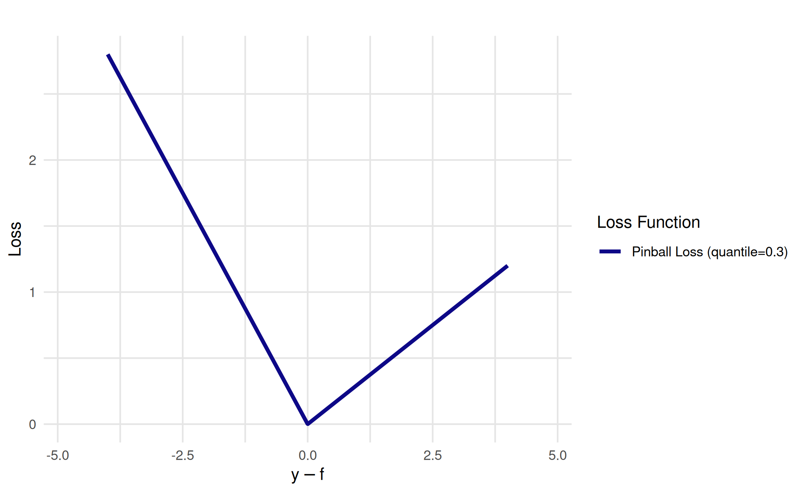
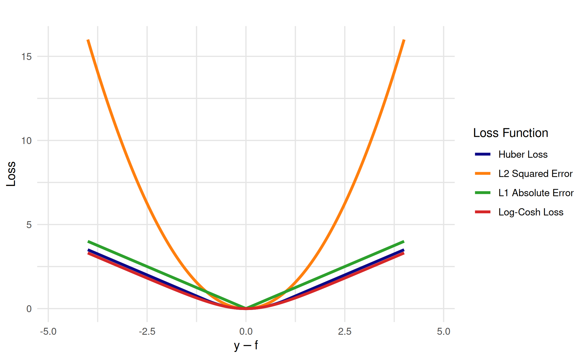
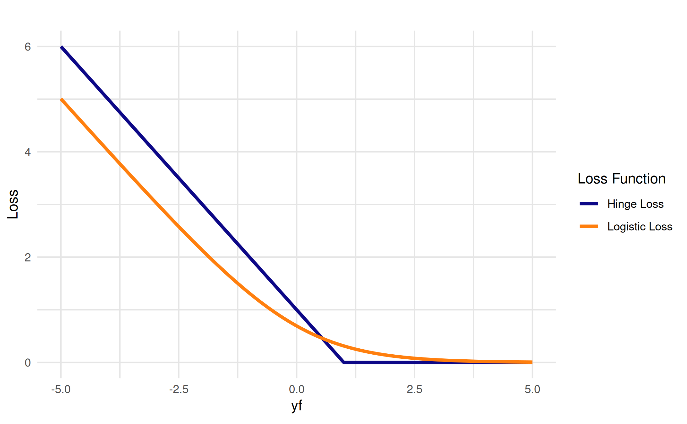

Visualization of Loss Functions
loss_functions.RmdLoss functions are wrapped in LossFunction objects. The
package includes predefined loss functions for both regression and
classification tasks. Classification loss functions can work with
different input scales (scores vs. probabilities).
as.data.table(dict_loss)
#> Key: <key>
#> key label task_type
#> <char> <char> <char>
#> 1: brier Brier Score classif
#> 2: cauchy Cauchy Loss regr
#> 3: cross-entropy Logistic Loss classif
#> 4: epsilon-insensitive Epsilon-Insensitive Loss regr
#> 5: hinge Hinge Loss classif
#> 6: huber Huber Loss regr
#> 7: l1_ae L1 Absolute Error regr
#> 8: l2_se L2 Squared Error regr
#> 9: log-barrier Log-Barrier Loss regr
#> 10: log-cosh Log-Cosh Loss regr
#> 11: pinball Pinball Loss regrTo get a loss function from the dictionary, use the
lss() function. Many loss functions support parameters
(e.g., quantile for pinball loss, delta for
Huber loss, epsilon for epsilon-insensitive loss). You can
specify these parameters directly in the lss() function
call. Here we retrieve the pinball loss function for regression with a
custom quantile parameter.
loss_function = lss("pinball", quantile = 0.3)Visualization
To visualize a loss function, use the as_visualizer()
function. For regression losses, the input represents residuals
.
For classification losses, the input can be either margins
(score-based) or probabilities
(probability-based). By default, loss functions are plotted with 1000
points for smooth curves.
vis = as_visualizer(loss_function, y_pred = seq(-4, 4), y_true = 0)Use the plot() method to plot the loss function.
vis$plot()
Regression Loss Functions
Here we visualize multiple regression loss functions:
loss_huber = lss("huber")
loss_l2 = lss("l2_se")
loss_l1 = lss("l1_ae")
loss_logcosh = lss("log-cosh")
vis_combined = as_visualizer(
list(loss_huber, loss_l2, loss_l1, loss_logcosh),
y_pred = seq(-4, 4),
y_true = 0,
n_points = 5000L # higher resolution for smooth curves
)
vis_combined$plot()
Classification Loss Functions
Classification loss functions can operate on different input scales depending on the loss function. Some work with scores, while others work with probabilities.
Score-based Classification Losses
Score-based losses operate on the margin where and is the prediction score:
hinge_loss = lss("hinge")
crossentropy_loss = lss("cross-entropy")
vis_scores = as_visualizer(
list(hinge_loss, crossentropy_loss),
input_type = "score"
)
vis_scores$plot()
Probability-based Classification Losses
Probability-based losses operate on predicted probabilities . The cross-entropy loss can be expressed in both score and probability forms, while the Brier score is naturally probability-based:
brier_loss = lss("brier")
vis_probs = as_visualizer(
list(crossentropy_loss, brier_loss),
input_type = "probability"
)
vis_probs$plot()
Controlling Which Class Curves to Display
When visualizing probability-based losses, you can control whether to
show curves for the positive class (y = 1), negative class
(y = 0), or both (default) using the y_curves
parameter:
vis_y1 = as_visualizer(
list(crossentropy_loss, brier_loss),
input_type = "probability",
y_curves = "y1" # Only show y = 1 curve
)
vis_y1$plot()
Adding Points to Loss Function Visualizations
You can add specific points to loss function plots to highlight
particular residual values and their corresponding loss values. The
add_points() method automatically calculates the
y-coordinates by evaluating the loss function at the given
x-coordinates.
vis_with_points = as_visualizer(
list(loss_l2, loss_l1),
y_pred = seq(-3, 3),
y_true = 0
)
vis_with_points$add_points(
x = c(-2, -1, 1, 2),
loss_id = "l2",
show_line = TRUE,
color = "red",
size = 3,
alpha = 0.8
)$add_points(
x = c(-2, 2),
loss_id = "l1", # Specify the L1 loss
show_line = FALSE,
color = "blue",
size = 2.5,
alpha = 0.7
)
vis_with_points$plot(
plot_title = "Loss Functions with Points",
show_legend = TRUE
)
Custom Loss Functions
We can also define and visualize custom loss functions:
custom_loss = LossFunction$new(
id = "custom_loss",
label = "Sinusoidal-Exponential Loss",
task_type = "regr",
fun = function(r) abs(r) * exp(-abs(r) / 3) + 0.5 * sin(2 * r)
)
vis = as_visualizer(custom_loss, y_pred = seq(-10, 10), y_true = 0, n_points = 5000L)
vis$plot()